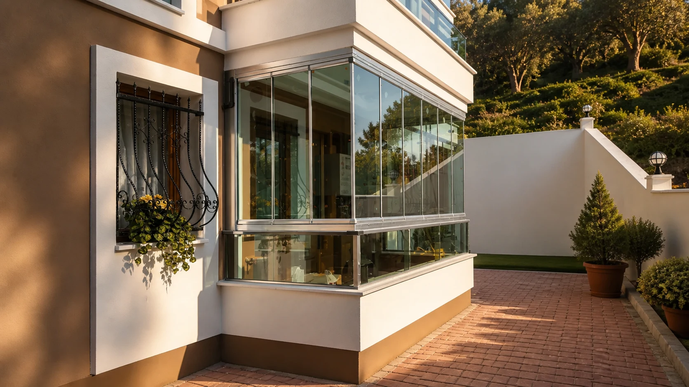
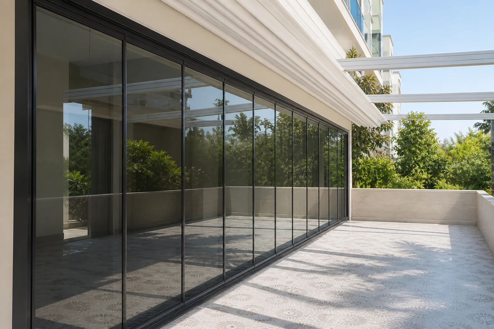
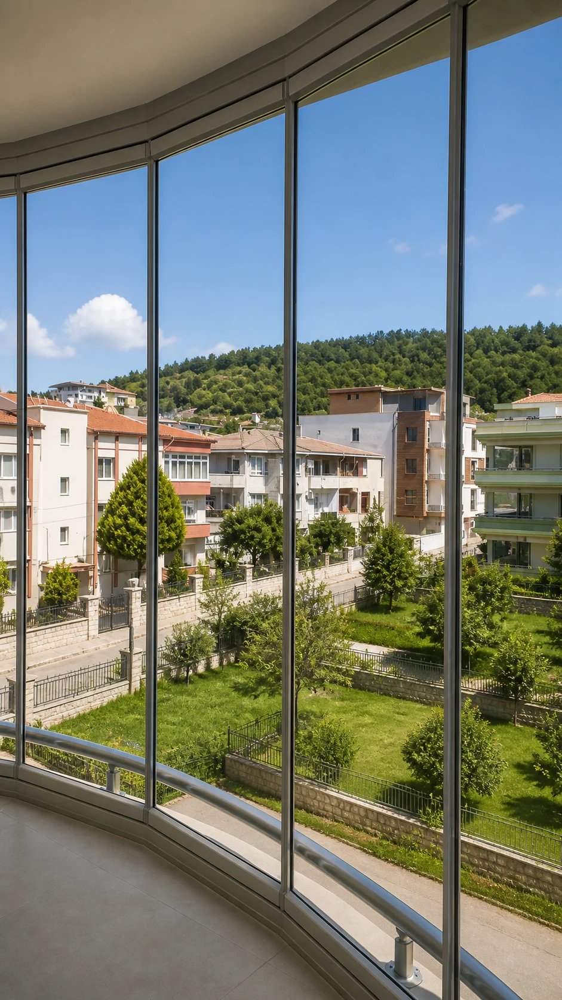
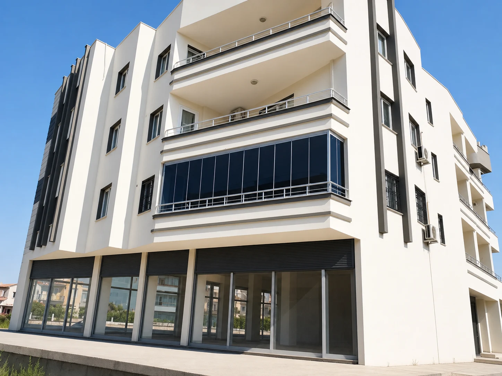
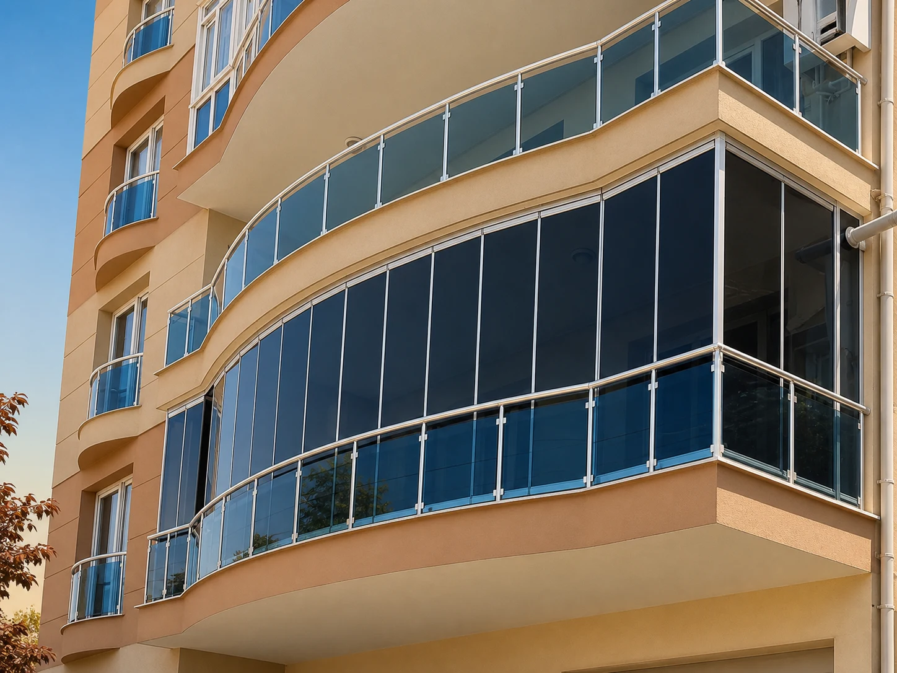
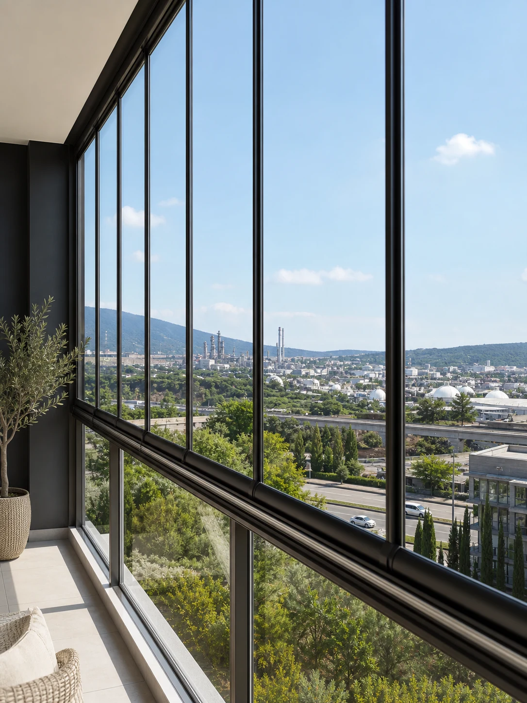
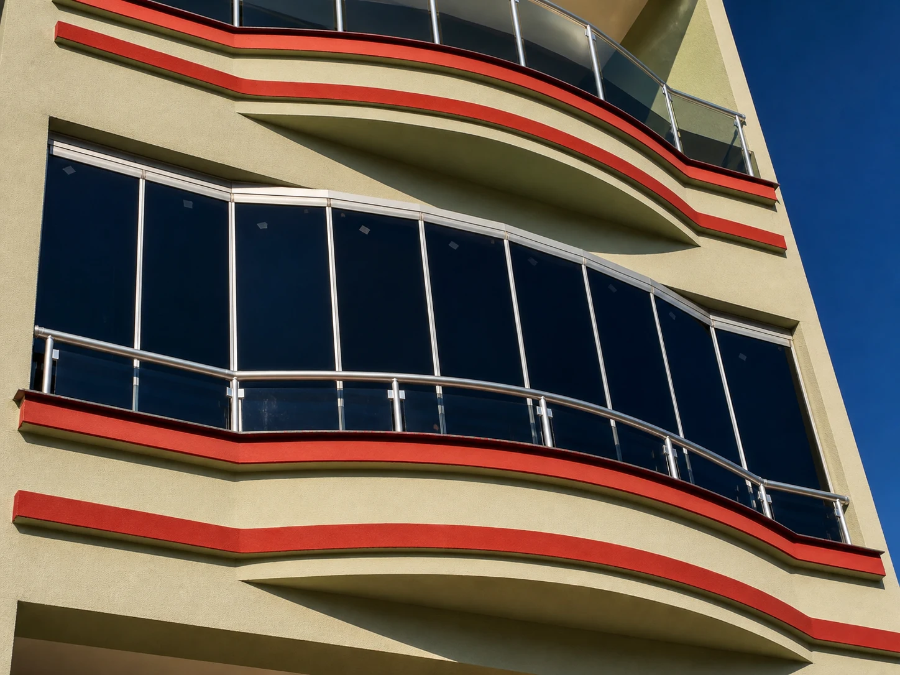
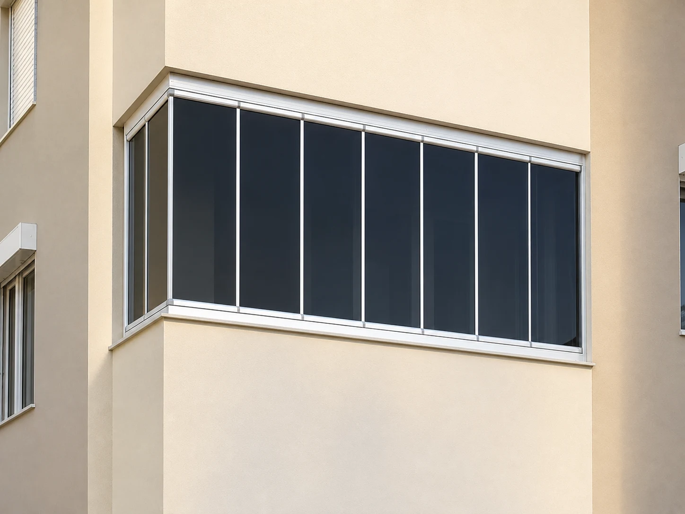
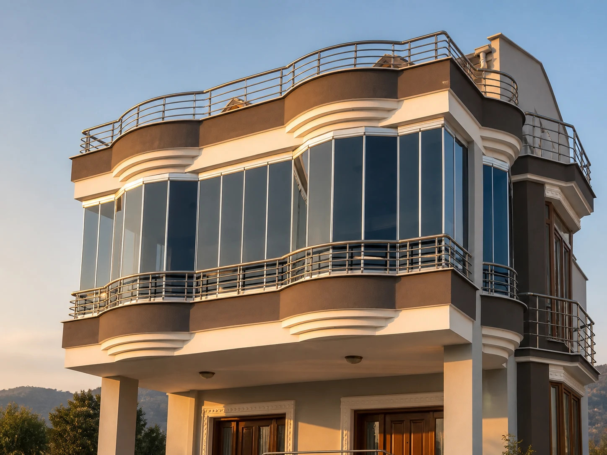

Cam Balkon
Bahçe terasını dört mevsim kullanın
Şeffaf paneller, açık hava hissini korurken yaşam alanını rüzgâr ve yağıştan korur.
Her balkonun ölçüsü, ışığı ve kullanım alışkanlığı farklıdır. Aşağıdaki uygulamalar, doğru sistem seçiminin mekânı nasıl dönüştürdüğünü gösterir.
Panoramik manzara, daha iyi ısı kontrolü, daha fazla kullanım alanı veya şık bir cephe görünümü… Her projeyi mekâna göre değerlendiriyoruz.

Şeffaf paneller, açık hava hissini korurken yaşam alanını rüzgâr ve yağıştan korur.

Raylı yapı, dar alanlarda panel hareketini kolaylaştırır ve zeminde daha fazla kullanım alanı bırakır.

İçeriden dışarıya açık görüş, gün ışığını artırır ve balkonun gerçek değerini ortaya çıkarır.

Koyu cam ve ince profiller, yeni yapıların çizgisel mimarisiyle güçlü bir bütünlük oluşturur.

Kavisli balkonlarda ölçü ve panel ritmi, hem estetik hem de sızdırmazlık için birlikte çözülür.

Doğru cam seçimi ve dengeli ışık, balkonun evin doğal bir devamı gibi kullanılmasını sağlar.

Tente ve gölgelendirme çözümleri, yaz aylarında ısı yükünü azaltarak konforu yükseltir.

PVC pencere ve kapı sistemleri, ses ve ısı kontrolünü uzun ömürlü kullanım kolaylığıyla birleştirir.

Geniş cephe uygulamalarında profil seçimi, panel ağırlığı ve montaj dengesi birlikte planlanır.
Arşivdeki logosuz uygulama fotoğraflarını; balkon tipi, cephe ve kullanım senaryosunu karşılaştırabilmeniz için grupladık.
Fotoğrafınızı veya ölçünüzü paylaşın; kullanım amacınıza ve cephe yapınıza uygun sistemi birlikte netleştirelim.